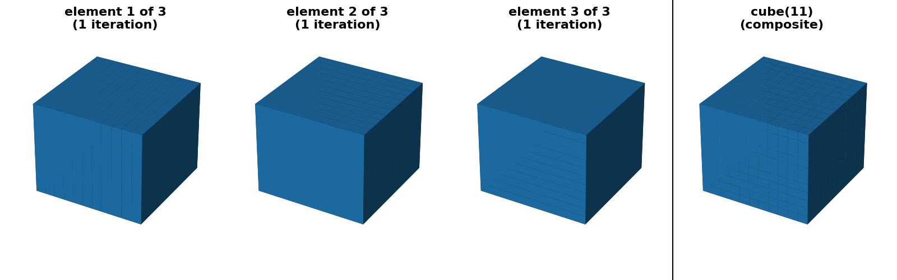
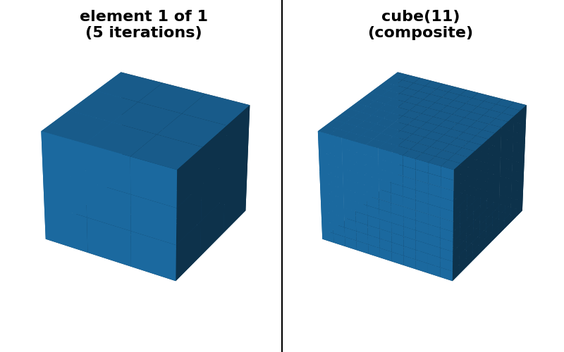
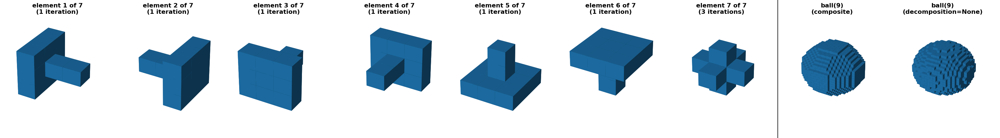

Source
SourceNote
Click here to download the full example code or to run this example in your browser via Binder
Decompose flat footprints (structuring elements)¶
Many footprints (structuring elements) can be decomposed into an equivalent
series of smaller structuring elements. The term “flat” refers to footprints
that only contain values of 0 or 1 (i.e., all methods in
skimage.morphology.footprints). Binary dilation operations have an
associative and distributive property that often allows decomposition into
an equivalent series of smaller footprints. Most often this is done to provide
a performance benefit.
As a concrete example, dilation with a square footprint of shape (15, 15) is equivalent to dilation with a rectangle of shape (15, 1) followed by another dilation with a rectangle of shape (1, 15). It is also equivalent to 7 consecutive dilations with a square footprint of shape (3, 3).
There are many possible decompositions and which one performs best may be architecture-dependent.
scikit-image currently provides two forms of automated decomposition. For the
cases of square, rectangle and cube footprints, there is an option
for a “separable” decomposition (size > 1 along only one axis at a time).
There is no separable decomposition into 1D operations for some other symmetric
convex shapes, e.g., diamond, octahedron and octagon. However, it
is possible to provide a “sequence” decomposition based on a series of small
footprints of shape (3,) * ndim.
For simplicity of implementation, all decompositions shown below use only odd-sized footprints with their origin located at the center of the footprint.


- 
- 

- 
import numpy as np
import matplotlib.pyplot as plt
from matplotlib import colors
from mpl_toolkits.mplot3d import Axes3D
from skimage.morphology import (ball, cube, diamond, disk, ellipse, octagon,
octahedron, rectangle, square)
from skimage.morphology.footprints import footprint_from_sequence
# Generate 2D and 3D structuring elements.
footprint_dict = {
"square(11) (separable)": (square(11, decomposition=None),
square(11, decomposition="separable")),
"square(11) (sequence)": (square(11, decomposition=None),
square(11, decomposition="sequence")),
"rectangle(7, 11) (separable)": (rectangle(7, 11, decomposition=None),
rectangle(7, 11,
decomposition="separable")),
"rectangle(7, 11) (sequence)": (rectangle(7, 11, decomposition=None),
rectangle(7, 11,
decomposition="sequence")),
"diamond(5) (sequence)": (diamond(5, decomposition=None),
diamond(5, decomposition="sequence")),
"disk(7, strict_radius=False) (sequence)": (
disk(7, strict_radius=False, decomposition=None),
disk(7, strict_radius=False, decomposition="sequence")
),
"disk(7, strict_radius=True) (crosses)": (
disk(7, strict_radius=True, decomposition=None),
disk(7, strict_radius=True, decomposition="crosses")
),
"ellipse(4, 9) (crosses)": (
ellipse(4, 9, decomposition=None),
ellipse(4, 9, decomposition="crosses")
),
"disk(20) (sequence)": (disk(20, strict_radius=False, decomposition=None),
disk(20, strict_radius=False,
decomposition="sequence")),
"octagon(7, 4) (sequence)": (octagon(7, 4, decomposition=None),
octagon(7, 4, decomposition="sequence")),
"cube(11) (separable)": (cube(11, decomposition=None),
cube(11, decomposition="separable")),
"cube(11) (sequence)": (cube(11, decomposition=None),
cube(11, decomposition="sequence")),
"octahedron(7) (sequence)": (octahedron(7, decomposition=None),
octahedron(7, decomposition="sequence")),
"ball(9) (sequence)": (ball(9, strict_radius=False, decomposition=None),
ball(9, strict_radius=False,
decomposition="sequence")),
}
# Visualize the elements
# binary white / blue colormap
cmap = colors.ListedColormap(['white', (0.1216, 0.4706, 0.70588)])
fontdict = dict(fontsize=16, fontweight='bold')
for title, (footprint, footprint_sequence) in footprint_dict.items():
ndim = footprint.ndim
num_seq = len(footprint_sequence)
approximate_decomposition = (
'ball' in title or 'disk' in title or 'ellipse' in title
)
if approximate_decomposition:
# Two extra plot in approximate cases to show both:
# 1.) decomposition=None idea footprint
# 2.) actual composite footprint corresponding to the sequence
num_subplots = num_seq + 2
else:
# composite and decomposition=None are identical so only 1 extra plot
num_subplots = num_seq + 1
fig = plt.figure(figsize=(4 * num_subplots, 5))
if ndim == 2:
ax = fig.add_subplot(1, num_subplots, num_subplots)
ax.imshow(footprint, cmap=cmap, vmin=0, vmax=1)
if approximate_decomposition:
ax2 = fig.add_subplot(1, num_subplots, num_subplots - 1)
footprint_composite = footprint_from_sequence(footprint_sequence)
ax2.imshow(footprint_composite, cmap=cmap, vmin=0, vmax=1)
else:
ax = fig.add_subplot(1, num_subplots, num_subplots,
projection=Axes3D.name)
ax.voxels(footprint, cmap=cmap)
if approximate_decomposition:
ax2 = fig.add_subplot(1, num_subplots, num_subplots - 1,
projection=Axes3D.name)
footprint_composite = footprint_from_sequence(footprint_sequence)
ax2.voxels(footprint_composite, cmap=cmap)
title1 = title.split(' (')[0]
if approximate_decomposition:
# plot decomposition=None on a separate axis from the composite
title = title1 + '\n(decomposition=None)'
else:
# for exact cases composite and decomposition=None are identical
title = title1 + '\n(composite)'
ax.set_title(title, fontdict=fontdict)
ax.set_axis_off()
if approximate_decomposition:
ax2.set_title(title1 + '\n(composite)', fontdict=fontdict)
ax2.set_axis_off()
for n, (fp, num_reps) in enumerate(footprint_sequence):
npad = [((footprint.shape[d] - fp.shape[d]) // 2, ) * 2
for d in range(ndim)]
fp = np.pad(fp, npad, mode='constant')
if ndim == 2:
ax = fig.add_subplot(1, num_subplots, n + 1)
ax.imshow(fp, cmap=cmap, vmin=0, vmax=1)
else:
ax = fig.add_subplot(1, num_subplots, n + 1,
projection=Axes3D.name)
ax.voxels(fp, cmap=cmap)
title = f"element {n + 1} of {num_seq}\n({num_reps} iteration"
title += "s)" if num_reps > 1 else ")"
ax.set_title(title, fontdict=fontdict)
ax.set_axis_off()
ax.set_xlabel(f'num_reps = {num_reps}')
fig.tight_layout()
# draw a line separating the sequence elements from the composite
line_pos = num_seq / num_subplots
line = plt.Line2D([line_pos, line_pos], [0, 1], color="black")
fig.add_artist(line)
plt.show()
Total running time of the script: ( 0 minutes 14.116 seconds)